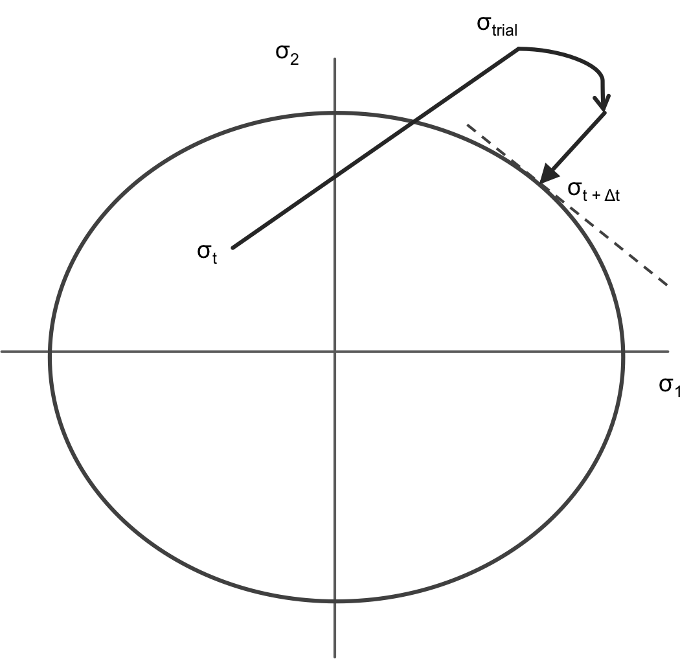

Radial Return Stress Update
Base class which calculates the effective inelastic strain increment required to return the isotropic stress state to a J2 yield surface. This class is intended to be a parent class for classes with specific constitutive models.
Algorithm References
The radial return mapping method, introduced by Simo and Taylor (1985), uses a von Mises yield surface to determine the increment of plastic strain necessary to return the stress state to the yield surface after a trial stress increment takes the computed stress state across the yield surface. Because the von Mises yield surface in the deviatoric stress space has the shape of a circle, the _plastic correction stress_ is always directed towards the center of the yield surface circle.
In addition to the Simo and Hughes (2006) textbook, Dunne and Petrinic (2005) is an excellent reference for users working with the RadialReturnStressUpdate materials; several of the isotropic plasticity and creep effective plastic strain increment algorithms are taken from Dunne and Petrinic (2005).
The Radial Return Stress Update Description
The stress update materials are not called by MOOSE directly but instead only by other materials using the computeProperties method. For the RadialReturnStressUpdate materials, this calling material is ComputeMultipleInelasticStress. Separating the call to the stress update materials from MOOSE allows us to iteratively call the stress update materials as is required to achieve convergence.
Radial Return Algorithm Overview

A trial stress is shown outside of the deviatoric yield surface and the radial return stress which is normal to the yield surface.
In this numerical approach, a trial stress is calculated at the start of each simulation time increment; the trial stress calculation assumed all of the new strain increment is elastic strain:
The algorithms checks to see if the trial stress state is outside of the yield surface, as shown in the figure to the right. If the stress state is outside of the yield surface, the algorithm recomputes the scalar effective inelastic strain required to return the stress state to the yield surface. This approach is given the name Radial Return because the yield surface used is the von Mises yield surface: in the devitoric stress space, this yield surface has the shape of a circle, and the scalar inelastic strain is assumed to always be directed at the circle center.
Recompute Iterations on the Effective Plastic Strain Increment
The recompute radial return materials each individually calculate, using the Newton Method, the amount of effective inelastic strain required to return the stress state to the yield surface.
where the change in the iterative effective inelastic strain is defined as the yield surface over the derivative of the yield surface with respect to the inelastic strain increment.
In the case of isotropic linear hardening plasticity, with the hardening function , the effective plastic strain increment has the form: where G is the isotropic shear modulus, and is the scalar von Mises trial stress.
Once convergence has been reached on the scalar inelastic strain increment, the full inelastic strain tensor is calculated.
The elastic strain is calculated by subtracting the return mapping inelastic strain increment tensor from the mechanical strain tensor. Mechanical strain is considered as the sum of the elastic and inelastic (plastic, creep, etc) strains.
The final inelastic strain is returned from the radial return stress update material, and ComputeMultipleInelasticStress computes the stress, with a return mapping stress increment following elasticity theory for finite strains. The final stress is calculated from the elastic strain increment.
When more than one radial recompute material is included in the simulation, as in Combined Power Law Creep and Linear Strain Hardening, ComputeMultipleInelasticStress will iterate over the change in the calculated stress until the return stress has reached a stable value.
Users can print out any of these strains and stresses using the RankTwoAux as described on the Visualizing Tensors page.
Substepping capability
Regular use of the radial return mapping triggers one instance of the return to the yield surface that spans the entire system wide time step. While the material time step limiter discussed in ComputeMultipleInelasticStress can effectively limit the time step size to achieve the desired convergence or integration error properties, it does so at the expense of global solves and discarded time steps. An alternative to the material time step limiter is "substepping", which subdivides the current time step into substeps which are solved sequentially within ComputeMultipleInelasticStress.
To enabled substepping, the user needs to input use_substep = true. Note, not all inelastic models support substepping, but it is expected that this capability to be gradually extended to more models.
The default way to calculate the number of substeps is to compare the effective elastic strain increment to the max_inelastic_increment and use that ratio to determine the number of substeps. In essence:
where substep_strain_tolerance and max_inelastic_increment are user parameters. Alternatively, as a criterion to select the number of substeps, the user can set the flag use_substep_integration_error to true, which will use the following formula:
This latest formula is directly based on the creep numerical integration error. The substep_strain_tolerance can be considered as the maximum creep numerical integration error allowed by substepping. A value of will work for many cases. An example of this option looks as follows:
use_substep = true
substep_strain_tolerance = 1.0e-4
use_substep_integration_error = true
Writing a New Stress Update Material
New radial return models must inherit from RadialReturnStressUpdate and must overwrite the six virtual methods.
initQpStatefulProperties: Set the initial values for all new material properties that are not initialized by an input parameter; generally the material properties initialized in this method are all set to zero.
computeStressInitialize: Calculate the initial trial stress state, the yield surface value, and any hardening or softening parameters at the start of the simulation time increment.
computeResidual: In each iteration over the inelastic strain increment, calculate the value of the effective scalar trial stress subtracted by the yield surface function.
computeDerivative: In each iteration over the inelastic strain increment, calculate the derivative of the yield surface function with respect to the inelastic strain increment.
iterationFinalize: Store the value of the inelastic strain increment at the end of each iteration.
computeStressFinalize: Update the stress after convergence on the inelastic strain increment has been reached.
Additionally, new radial return methods must also overwrite a single method from the MOOSE Material class.
resetQpProperties: Set the material property used in the iteration, usually , to zero at the start the iteration. This method is necessary to avoid incorrect material property values.
More details on how to write the equivalent yield surface equation for a creep model are given in Dunne and Petrinic.